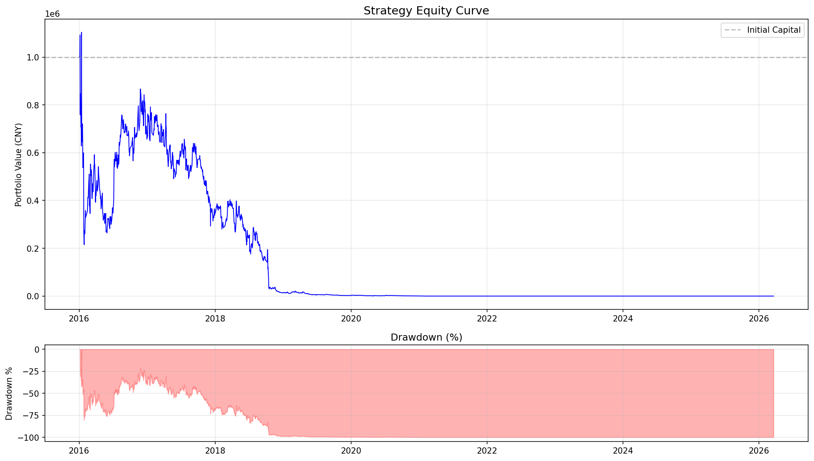
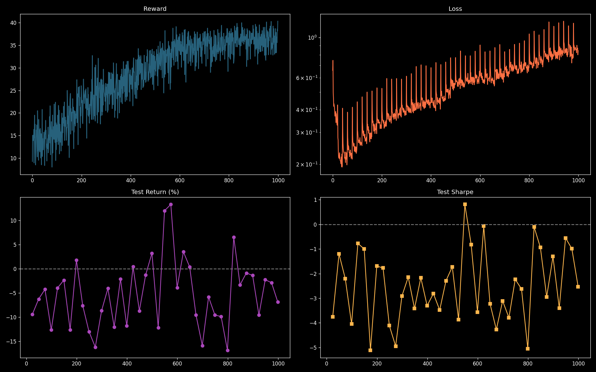
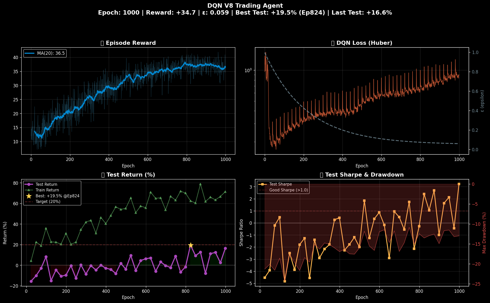

A research system for predicting next‑day limit‑up moves and multi‑day main‑wave rallies on the A‑share market. It combines a 783K‑parameter multi‑task BiLSTM‑Attention encoder with an XGBoost / LightGBM / CatBoost ensemble, drawing on 623‑dimensional features (basic + multi‑scale + level‑2 proxies + sector rotation + limit‑up ecology) — XGBoost importance prunes them down to 300 while preserving ~89% of signal.
Holdout Performance (2025 – 2026)
- Limit‑up prediction Ensemble AUC — 0.7982
- Consecutive limit‑up Ensemble AUC — 0.6653
- Main‑wave (5d > 15%) AUC — 0.7108
- Daily Top‑10 limit‑up hit rate — 54.4%
- Daily Top‑10 main‑wave hit rate — 50.5%
- Top‑1% main‑wave hit rate — 62.5% (vs 6.83% baseline → 9.2× lift)
System Architecture
- Whole‑market daily data via akshare / Tencent API → limit‑up detection + technical indicators (MACD/KDJ/RSI/BOLL/OBV).
- Feature engineering: 83 base + 540 multi‑scale dims, plus level‑2 proxies, sector rotation, market sentiment and limit‑up ecology.
- Multi‑task LSTM‑Attention encoder — 3 BiLSTM layers (hidden = 96) + multi‑head attention + 128‑D shared embedding, 3 output heads (limit‑up / main‑wave / 3‑day return).
- Tree ensemble (XGBoost GPU‑hist · LightGBM · CatBoost) on 428‑D input (300 features + 128 embedding).
- AUC‑weighted ensemble → whole‑market ranking → daily Top‑N recommendations.
Workflow
- Weekly: weekly_train.py refreshes data and retrains the full stack (~30 min).
- Daily: daily_predict.py runs inference and returns ranked Top‑N picks in ~3 minutes.
- Walk‑forward backtests, A/B comparisons and an oracle test confirm the gap between model output and theoretical ceiling.
Skills & Technologies
- PyTorch · BiLSTM · Multi‑Head Attention
- XGBoost · LightGBM · CatBoost
- Multi‑task Learning
- Feature Engineering at Scale
- Walk‑forward Backtesting
- Quantitative Finance
Gallery



